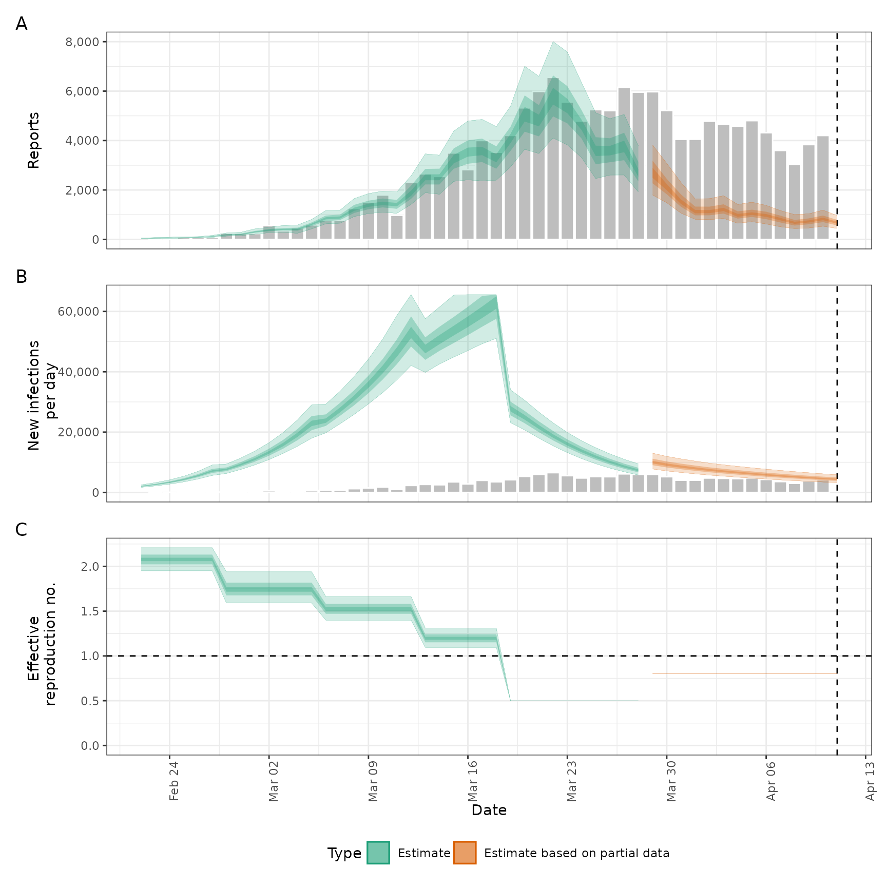

Forecast infections from a given fit and trajectory of the time-varying reproduction number
Source:R/simulate_infections.R
forecast_infections.Rd![[Stable]](figures/lifecycle-stable.svg) This function simulates infections using an existing fit to observed cases
but with a modified time-varying reproduction number. This can be used to
explore forecast models or past counterfactuals. Simulations can be run in
parallel using
This function simulates infections using an existing fit to observed cases
but with a modified time-varying reproduction number. This can be used to
explore forecast models or past counterfactuals. Simulations can be run in
parallel using future::plan().
Usage
forecast_infections(
estimates,
R = NULL,
model = NULL,
samples = NULL,
batch_size = 10,
backend = "rstan",
verbose = interactive()
)Arguments
- estimates
The
estimateselement of anepinow()run that has been done with output = "fit", or the result ofestimate_infections()withreturn_fitset to TRUE.- R
A numeric vector of reproduction numbers; these will overwrite the reproduction numbers contained in
estimates, except elements set to NA. Alternatively accepts a<data.frame>containing at leastdateandvalue(integer) variables and optionallysample. More (or fewer) days than in the original fit can be simulated.- model
A compiled stan model as returned by
rstan::stan_model().- samples
Numeric, number of posterior samples to simulate from. The default is to use all samples in the
estimatesinput.- batch_size
Numeric, defaults to 10. Size of batches in which to simulate. May decrease run times due to reduced IO costs but this is still being evaluated. If set to NULL then all simulations are done at once.
- backend
Character string indicating the backend to use for fitting stan models. Supported arguments are "rstan" (default) or "cmdstanr".
- verbose
Logical defaults to
interactive(). If theprogressrpackage is available, a progress bar will be shown.
Value
A <forecast_infections> object containing simulated infections and
cases from the specified scenario. The structure is similar to
estimate_infections() output but contains samples rather than fit.
Examples
# \donttest{
# set number of cores to use
old_opts <- options()
options(mc.cores = ifelse(interactive(), 4, 1))
# get example case counts
reported_cases <- example_confirmed[1:40]
# fit model to data to recover Rt estimates
# samples and calculation time have been reduced for this example
# for real analyses, use at least samples = 2000
est <- estimate_infections(reported_cases,
generation_time = generation_time_opts(example_generation_time),
delays = delay_opts(example_incubation_period + example_reporting_delay),
rt = rt_opts(prior = LogNormal(mean = 2, sd = 0.1), rw = 7),
obs = obs_opts(scale = Normal(mean = 0.1, sd = 0.01)),
gp = NULL,
forecast = forecast_opts(horizon = 0),
stan = stan_opts(samples = 100, warmup = 200)
)
#> Warning: The largest R-hat is NA, indicating chains have not mixed.
#> Running the chains for more iterations may help. See
#> https://mc-stan.org/misc/warnings.html#r-hat
#> Warning: Bulk Effective Samples Size (ESS) is too low, indicating posterior means and medians may be unreliable.
#> Running the chains for more iterations may help. See
#> https://mc-stan.org/misc/warnings.html#bulk-ess
#> Warning: Tail Effective Samples Size (ESS) is too low, indicating posterior variances and tail quantiles may be unreliable.
#> Running the chains for more iterations may help. See
#> https://mc-stan.org/misc/warnings.html#tail-ess
# update Rt trajectory and simulate new infections using it
# keeping the first 30 days' estimates and adding a 10-day forecast
R <- c(rep(NA_real_, 30), rep(0.8, 10))
sims <- forecast_infections(est, R)
plot(sims)

options(old_opts)
# }